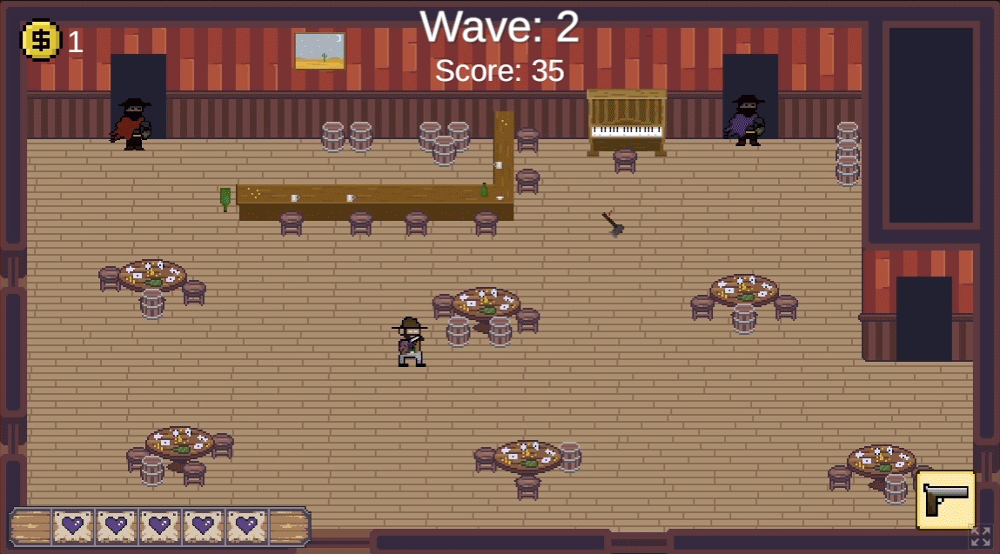
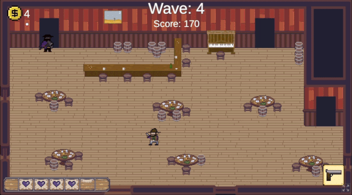
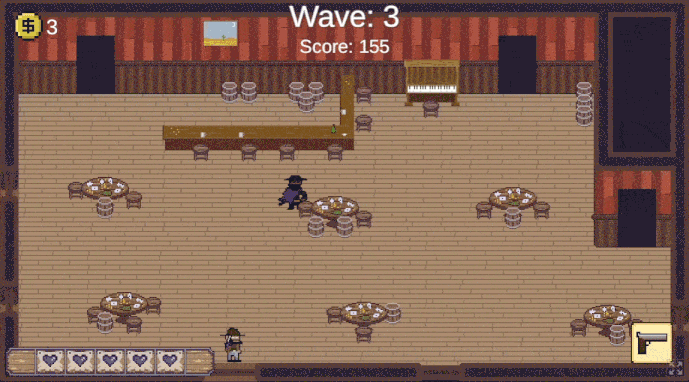
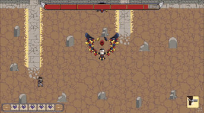

Coding Artworks
Down below are 3 artworks I created using coding techniques from the Art 74 class, taught by Professor James Morgan. Including Devil's Acre my video game from the Art/CS 108 class, also taught by Professor James Morgan. In addition to the works down below, this website is also hand coded by myself.
Devil's Acre, 2023, Art/CS 108
For the Art/CS-108 class, I created a video game with my team members Ben Beary, Daniel Perez Gomez, & Alexander Price. In our team, I am the lead coder for the game, Ben is a coder and artist, Daniel is an artist and story writer, and Alexander is the artist. Using C# and Unity, I coded the entire game with the help of Ben, while we implemented all the art assets Ben, Daniel, and Alexander made.
Game Info
Play the western and paranormal top down shooter known as Devil's Acre. Join the adventure of a lone wanderer in a search to slay the demon who cursed him. Make your way through the small desert town and defeat the outlaws and bandits in the Saloon. Gain coins and upgrade your arsenal in the Shop. And, finally face the great evil waiting in the Graveyard.
Moments from the game




Plunder, 2021, Art 74
The project was to make a website art piece using multiple different web pages linked together with HTML. I decided to take a choose your own path game approach to the concept because I like the idea of linking different web pages as game phases. I centered the game around being the captain of a pirate ship where your goal is to plunder a merchant’s ship, but avoid the storm at all costs.
Click on the image below to play Plunder

Selfie, 2021, Art 74
For this project, we had to use p5.js, a JavaScript processing code, in order to create a rendition of ourselves. In my case, I use different shapes, colors, outlines, and shading in order to make an accurate rendition of my likeness.
Click this link to see the code of this artwork.
Floor is Lava, 2021, Art 74
Similar to the Selfie project, I used p5.js to create a rendition of the classic game of ‘The floor is lava’. Using the mouse cursor, hover over the furniture you can stand on in order to increase your score. As the game progresses, the furniture changes and also gets smaller and smaller inversely proportional to the score increase.